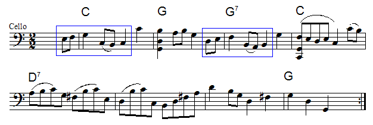
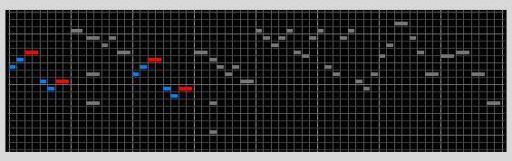

|  | |||
| Looking now at the first pair of beats, this phrase can be naturally subdivided into two eighth notes that, harmonically speaking, lead to a quarter note. The same can be said for the second pair of beats. | |||
|  | |||
| Once again we see the same relationship | |||
|
Return to Bourree.
© 2004 Harlan Brothers